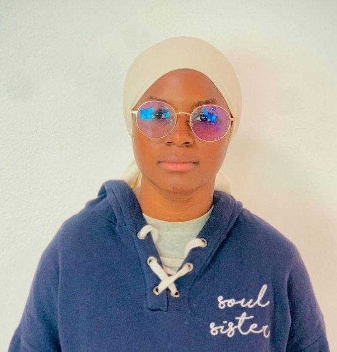

Ce CV est une démonstration technique figée à 2024. Pour mon parcours à jour, consultez mon profil LinkedIn.

Coordonnées
Langues
-
Français
-
Anglais
Compétences
- Java, JEE
- JavaScript
- Python, PHP
- HTML, CSS
- SQL, UML
- WordPress
- Tailwind
Outils
- PostgreSQL, SQL Server, MySQL
- Eclipse IDE, IntelliJ
- Visual Studio Code
- Docker, Git
Centres d'intérêts
- Vidéos sur le développement
- Conférences techniques
- Films sur l'informatique
- Contemplation de la nature
Ndeye Penda Sarr
Étudiante Ingénieure
Formation
Master 1 En Système D'Informations Réparties
Université Cheikh Anta Diop — Dakar
2024 — 2025
African Girls Can Code Initiative 4
Agence Universitaire De La Francophonie
Décembre 2024
Licence 3 Informatique
Université Cheikh Anta Diop — Dakar
2023 — 2024
Baccalauréat Scientifique
Collège Saint-Esprit — Mbour
2020 — 2021
Projets Réalisés
Offres de services à domicile
Mémoire de fin de cycle de licence — Dakar
- Conception et développement d'une application web permettant de connecter des clients et des prestataires de services (HTML, CSS, Bootstrap, Java, JEE, PostgreSQL).
Novembre 2024
Site de rencontre
Examen de développement web — Dakar
- Développement d'une application web de rencontre avec un système de messagerie intégré (PHP, AJAX, jQuery, Bootstrap, HTML, CSS, MySQL).
Août 2024
Agence Immobilière
Examen de développement web — Dakar
- Conception et développement d'une application web de gestion immobilière permettant la gestion des biens, des utilisateurs et des transactions (HTML, CSS, PHP, JavaScript, MySQL).
Juillet 2023